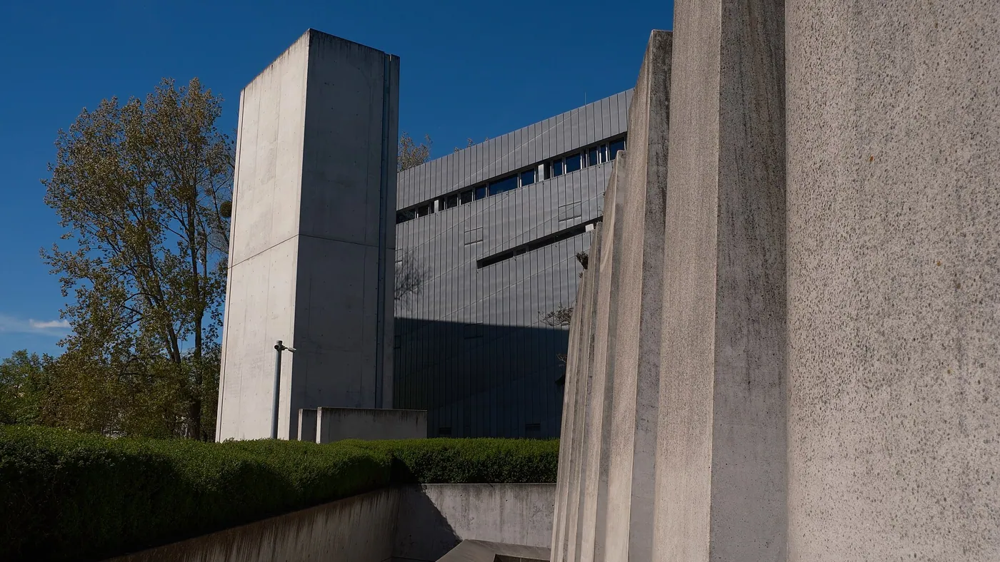
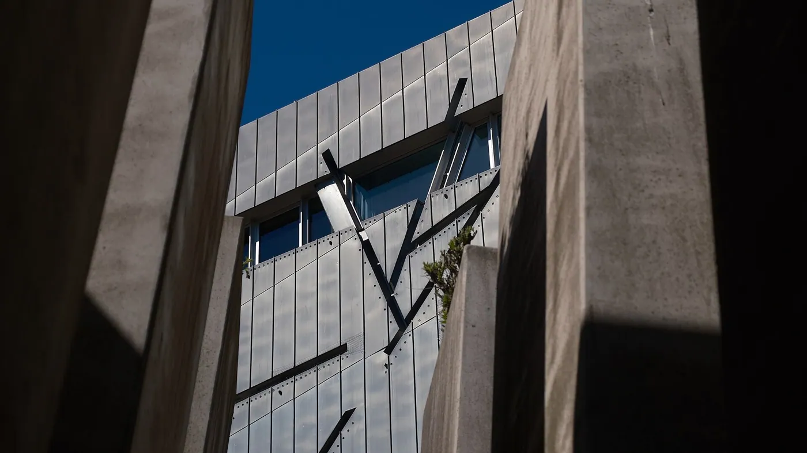
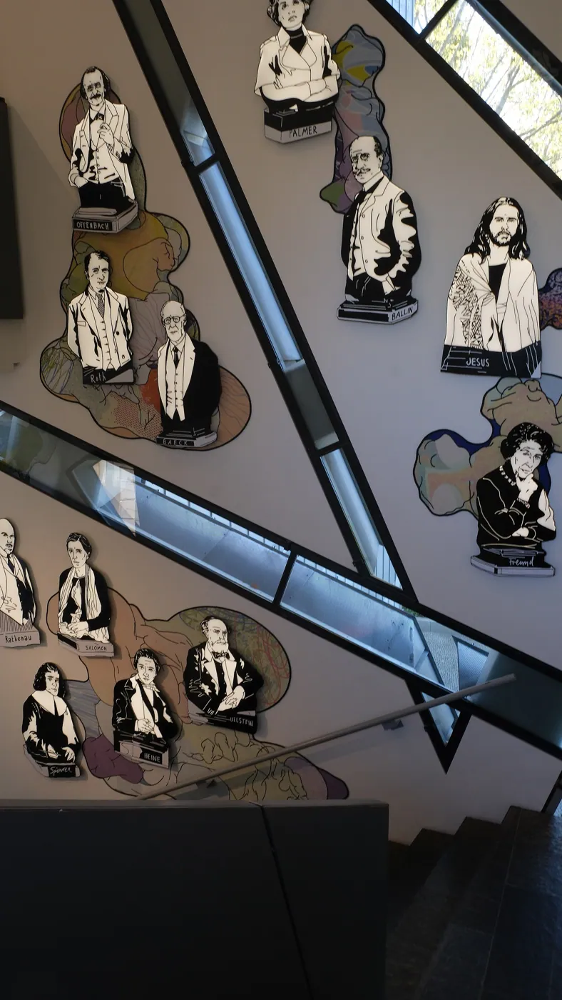
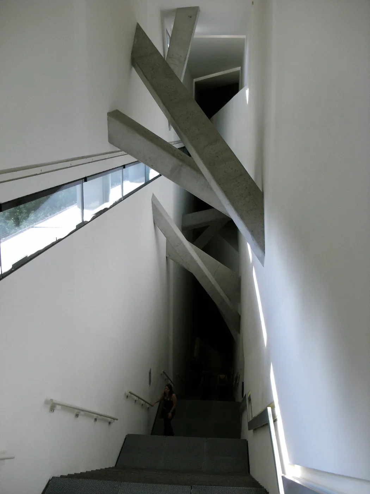
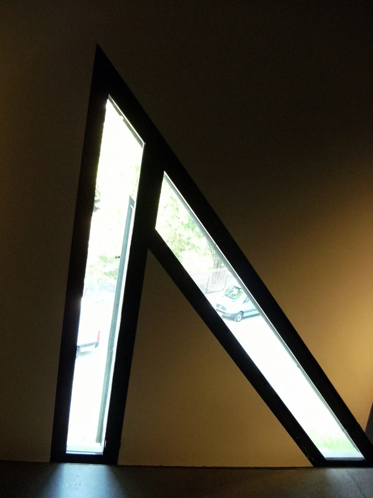
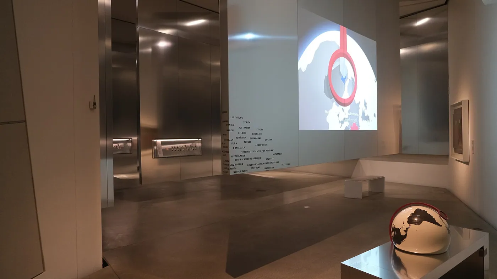
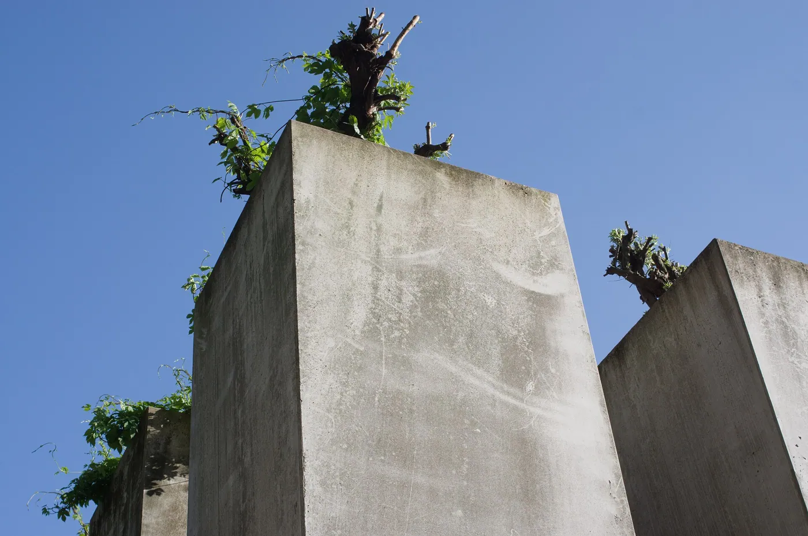
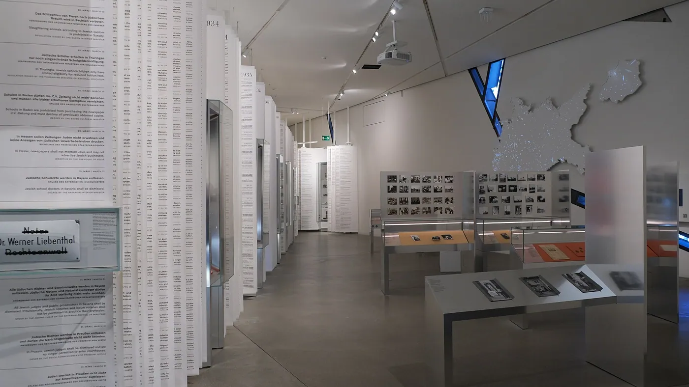

1/8 · ExteriorPhoto: Ziko van Dijk · CC BY-SA 4.0 · source
2/8 · ExteriorPhoto: Ziko van Dijk · CC BY-SA 4.0 · source
3/8 · ContextPhoto: Ziko van Dijk · CC BY-SA 4.0 · source
4/8 · ContextPhoto: Ziko van Dijk · CC BY-SA 4.0 · source
5/8 · DetailPhoto: Ziko van Dijk · CC BY-SA 4.0 · source
6/8 · InteriorPhoto: Ziko van Dijk · CC BY-SA 4.0 · source
7/8 · InteriorPhoto: Ziko van Dijk · CC BY-SA 4.0 · source
8/8 · InteriorPhoto: Ziko van Dijk · CC BY-SA 4.0 · sourceMuseum · Deconstructivism
Jewish Museum Berlin
Daniel Libeskind · Berlin, Germany · 2001
Key featuresA zigzag plan cut through by empty 'voids' that visitors can see but not enter.
- Architect
- Daniel Libeskind
- Place
- Berlin, Germany
- Year
- 2001
- Typology
- Museum
- Movement
- Deconstructivism
- Region
- Europe
See it on the wall